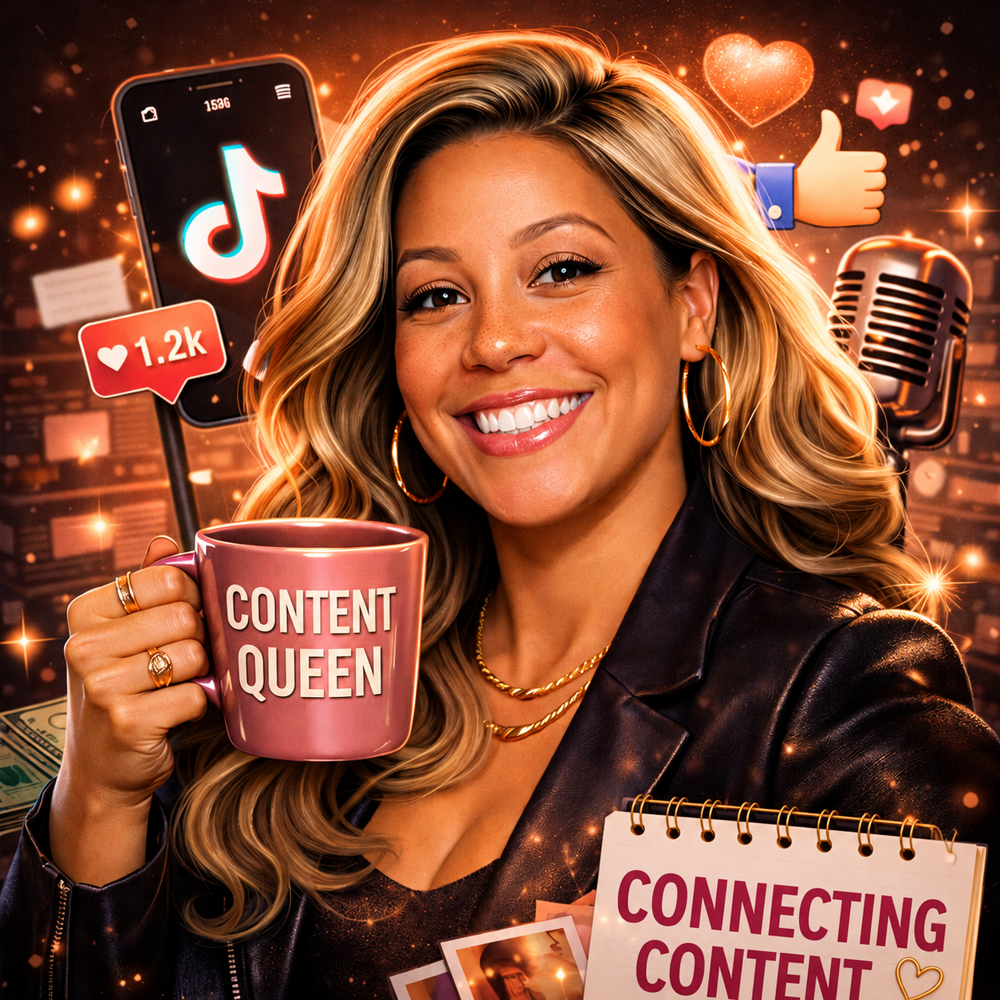
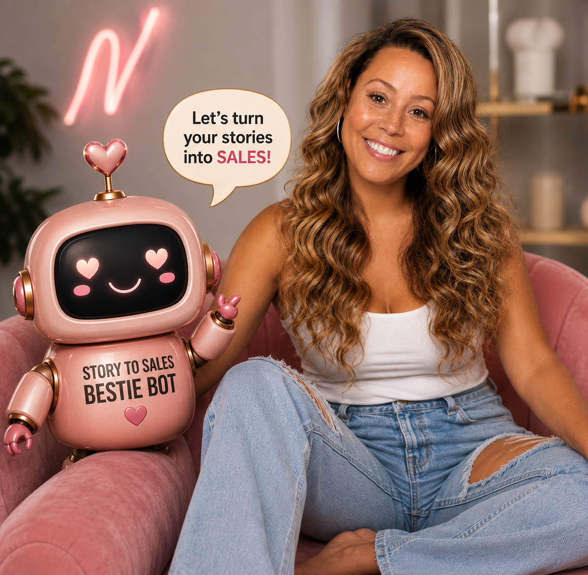

Your content coach is waitingYou're not out of ideas, Mama. You're just telling stories the long, hard way. Story to Sales Bestie Bot gives you a personalized AI coach that turns your everyday moments into posts that connect — and convert.
Get My Story to Sales Bestie 👇🏽Instant access — just $27
Eleven years in corporate property management. Then — while I was on medical leave — they forced me out. My car was close to repossession. My family was struggling. And I had no backup plan.
I started looking for ways to make money online because I needed something flexible. Something that would let me be present for my kids and still take care of my health while I figured it out. Like most beginners, I had no idea what I was doing. I overthought every post. I sat there staring at my phone wondering what to say.
As I learned how to tell my story — how to share real-life moments instead of manufactured content — everything changed.
I replaced my lost income. I became a stay-at-home mom. I built a business from my phone. Not through some formula or shortcut — through learning to share my actual life in a way that connected with people.
Story to Sales Bestie exists because I know that staring-at-the-phone feeling. And I didn't want anyone else stuck there as long as I was.

Building a business from my phone — while being home with my babies 💕
Real talk, because I'll always be straight with you: That's my personal result — built over time, with consistency and work. Digital products don't come with a guarantee, and I won't pretend otherwise. Your results will depend on your effort, your audience, and how you show up. What I can promise is that the process inside this bot is exactly what I used. No gimmicks. Just the real thing.
Every feature inside was built around one question: what does a mom with real-life chaos actually need to show up consistently online?
Not a generic prompt list. An AI that learns your voice, your niche, and your story — then helps you create content that actually sounds like you. Hook suggestions, caption support, CTA ideas, and content angles, all tuned to your life.
Turn your real moments — the hard ones, the small wins, the everyday stuff — into posts that resonate. Content coaching for TikTok, Facebook, and Instagram, so wherever you show up, you're ready.
Content that connects first, sells second. The same story-sharing approach I used to build my business — guiding people from "who is she?" to "I need what she has" without ever feeling pushy or fake.
Every other bot I've tried sounds like a bot. Antonia said it best: "Everything else always feels generic. Yours doesn't." That's the whole point. This is built from my actual content experience — my voice patterns, my niche knowledge, my way of turning life into sales. You're not getting a template. You're getting what I built to work.
Just $27 • Instant access after purchase
This is a tool. What you do with it — how consistently you show up, how honest you get in your content — that part is yours. I built the bot. You build the habit.
"Listen! If you aren't using Ash's Story to Sales Bestie, you're missing out. It has helped me actually put my story together in a way that's easy and relatable when creating content. Go check it out if you haven't yet!"
"I just want to tell you I love your bot more than any other bot I have. Everything else always feels generic and sounds like a bot. Yours doesn't."
"Ash, why haven't you made this public yet? I got a lead right away today."
"I've been using her and she's 🔥🔥🔥"
Click the button, complete your purchase, and get instant access. No waiting, no downloads — it's ready when you are.
Open the bot and tell it something that happened — a win, a hard moment, a thought you had during pickup line. Watch it help you turn that into content.
Real stories find real people. Keep showing up consistently — that's where the connection (and the sales) start building.
Just $27 • Instant access
Mama, I need you to hear something.
I almost didn't build this. I kept thinking: who am I to sell something? My account wasn't big enough. My story wasn't polished enough. And I was scared of what people would think.
But I kept seeing mamas in the same place I'd been — staring at the phone, convinced they had nothing worth saying, watching everybody else build while they stayed stuck. That's what changed my mind. If you're in that place right now, I built this for you. Not the version of you that has it all together. The one who's figuring it out, one real post at a time.
See you on the inside 💕